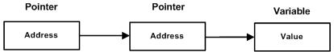

C++ 指向指针的指针（多级间接寻址）
 C++ 指针
C++ 指针指向指针的指针是一种多级间接寻址的形式，或者说是一个指针链。
指针的指针就是将指针的地址存放在另一个指针里面。
通常，一个指针包含一个变量的地址。当我们定义一个指向指针的指针时，第一个指针包含了第二个指针的地址，第二个指针指向包含实际值的位置。

一个指向指针的指针变量必须如下声明，即在变量名前放置两个星号。例如，下面声明了一个指向 int 类型指针的指针：
int **var;
当一个目标值被一个指针间接指向到另一个指针时，访问这个值需要使用两个星号运算符，如下面实例所示：
实例
#include <iostream>
using namespace std;
int main ()
{
int var;
int *ptr;
int **pptr;
var = 3000;
// 获取 var 的地址
ptr = &var;
// 使用运算符 & 获取 ptr 的地址
pptr = &ptr;
// 使用 pptr 获取值
cout << "var 值为 :" << var << endl;
cout << "*ptr 值为:" << *ptr << endl;
cout << "**pptr 值为:" << **pptr << endl;
return 0;
}
当上面的代码被编译和执行时，它会产生下列结果：
var 值为 :3000 *ptr 值为:3000 **pptr 值为:3000

看树的鸟
578***280@qq.com
通过查看 var，ptr，*pptr 的地址可以更加清晰的理解多级间接寻址的寻址过程，从结果可以看出这 3 个的地址都是一样的。
#include <iostream> using namespace std; int main () { int var; int *ptr; int **pptr; var = 3000; // 获取 var 的地址 ptr = &var; // 使用运算符 & 获取 ptr 的地址 pptr = &ptr; // 使用 pptr 获取值 cout << "var 值为 :" << var << endl; cout << "*ptr 值为:" << *ptr << endl; cout << "**pptr 值为:" << **pptr << endl; cout << "var 地址为 :" << &var << endl; cout << "ptr=&var 值为var的地址:" << ptr << endl; cout << "ptr地址为:" << &ptr << endl; cout << "*pptr=ptr=&var 值为var的地址:" << *pptr << endl; cout << "pptr 地址为:" << &pptr << endl; return 0; }运算结果为：
看树的鸟
578***280@qq.com
周大侠
277***091@qq.com
如果二级指针难以理解，可以把一级指针看做一个基本类型，这样二级指针的使用就跟一级指针相同了。
比如:
周大侠
277***091@qq.com
TMAIAM
193***9655@qq.com
其中理解好对于一个指针 type *p 中的 p、*p 和 &p 到底是什么，那也就能够理解二级指针了。
我的方法是拆分着看，其中 * 是取值符号，& 是取地址符号；然后就把 p 当作正常的变量看待
个人理解是不要把 *p 看成整体，看成是 *(p) 更好理解。把 p 看成正常的变量名，那么 p 这里就表示这个变量的值；
#include <iostream> using namespace std; int main (){ int var; int *ptr; int **pptr; var = 3000; // 获取 var 的地址 ptr = &var; // 使用运算符 & 获取 ptr 的地址 pptr = &ptr; // 使用 pptr 获取值 cout << "var 值为 :" << var << endl; cout << "&var 值为 :" << &var << endl; cout << "*ptr 值为 :" << *ptr << endl; cout << "ptr 值为 :" << ptr << endl; cout << "&ptr 值为 :" << &ptr << endl; cout << "**pptr 值为 :" << **pptr << endl; cout << "*pptr 值为 :" << *pptr << endl; cout << "pptr 值为:" << pptr << endl; cout << "&pptr 值为:" << &pptr << endl; return 0; }运算结果为：
把 *p 里面的看成普通变量可能有点难理解，举个例子：
比如一个普通变量 int a; 我们可以理解成一个可以存放 32 位大小的盒子，这个盒子之只能放整数，里面的数据值可能是 300，那么 a 就是 300 的别名，所以我们可以说 a 是整数 300；同理但看这里的 p，在 32 位计算机中，有一个 32 位（4Byte）大小的盒子，这个盒子只能放地址，里面的地址可能是 0x61ff18，那么 p 就是 0x61ff18 的别名。所以说 a 和 p 实际上表示的都是盒子里面的值。
TMAIAM
193***9655@qq.com
缘分天空
300***67@qq.com
可以定义指针的指针的指针，也就是可以一直往后定义：
#include <iostream> using namespace std; int main() { int var; int* ptr; int** pptr; int*** ppptr; var = 3000; // 获取 var 的地址 ptr = &var; // 使用运算符 & 获取 ptr 的地址 pptr = &ptr; ppptr = &pptr; // 使用 pptr 获取值 cout << "var 值为 :" << var << endl; cout << "ptr 值为:" << ptr << endl; cout << "pptr 值为:" << pptr << endl; cout << "pptr 值为:" << ppptr << endl; return 0; }输出结果为：
缘分天空
300***67@qq.com
VALUE
phj***89905610@163.com
指针数组用来存放多个指针，即地址，可将地址看作一种特殊的值。
指针数组的数组名（即指针数组的首地址）相当于指针的指针。
返回指针数组的函数，要声明和定义为指针的指针函数。
即:
type ** muyFunction(){ }#include <iostream> using namespace std; // 函数声明 int ** swap(int *x, int *y); int main () { // 局部变量声明 int a = 100; int b = 200; int **c; cout << "交换前，a 的值：" << a << endl; cout << "交换前，b 的值：" << b << endl; /* 调用函数来交换值 */ c=swap(&a, &b); cout << "交换后，a 的值：" << **c << endl; cout << "交换后，b 的值：" << **(c+1) << endl; return 0; } // 函数定义 int ** swap(int *x, int *y) { int *temp; temp=NULL; static int *r[2]; cout << "调用的函数中的交换:"<<endl; cout << *x <<endl; cout << *y <<endl; temp = x; /* 保存地址 x 的值 */ x = y; /* 把 y 赋值给 x */ y = temp; /* 把 x 赋值给 y */ cout << *x <<endl; cout << *y <<endl; //cout << x <<endl; //cout << y <<endl; r[0]=x; r[1]=y; return r; }输出结果：
若将返回指针数组的函数定义为指针函数，如下：
#include <iostream> using namespace std; // 函数声明 int * swap(int *x, int *y); int main () { // 局部变量声明 int a = 100; int b = 200; int **c; cout << "交换前，a 的值：" << a << endl; cout << "交换前，b 的值：" << b << endl; /* 调用函数来交换值 */ c=swap(&a, &b); cout << "交换后，a 的值：" << **c << endl; cout << "交换后，b 的值：" << **(c+1) << endl; return 0; } // 函数定义 int * swap(int *x, int *y) { int *temp; temp=NULL; static int *r[2]; cout << "调用的函数中的交换:"<<endl; cout << *x <<endl; cout << *y <<endl; temp = x; /* 保存地址 x 的值 */ x = y; /* 把 y 赋值给 x */ y = temp; /* 把 x 赋值给 y */ cout << *x <<endl; cout << *y <<endl; //cout << x <<endl; //cout << y <<endl; r[0]=x; r[1]=y; return r; }出现如下错误：
main.cpp: In function ‘int main()’: main.cpp:17:10: error: cannot convert ‘int*’ to ‘int**’ in assignment 17 | c=swap(&a, &b); | ~~~~^~~~~~~~ | | | int* main.cpp: In function ‘int* swap(int*, int*)’: main.cpp:43:11: error: cannot convert ‘int**’ to ‘int*’ in return 43 | return r; | ^错误 43 中，返回的 r 是 int 型的指针的指针，但是定义的函数是指针函数，不是指针的指针函数。
错误 17 中，定义的函数是指针函数，接受的 c 是指针的指针函数。（不是主要错误）。
因此在传指针进行值得交换时，也可以返回交换后得指针，此时指针存放在一个指针数组中返回，因此函数时指针的指针函数。
返回数组：函数定义为指针函数即可。详情见数组作为函数返回值。
#include <iostream> using namespace std; // 函数声明 int * swap(int arr[]); //int * swap(int *arr);指针形式 int main () { // 局部变量声明 int a[2] = {100,200}; int *c; cout << a[0] << endl; cout << a[1] << endl; /* 调用函数来交换值 */ c=swap(a); cout << *c << endl; return 0; } // 函数定义 int * swap(int arr[]) //int * swap(int *arr) { static int r[1]; //r[0]=(*arr)+*(arr+1); r[0]=arr[0]+arr[1]; return r; }输出结果为：
VALUE
phj***89905610@163.com